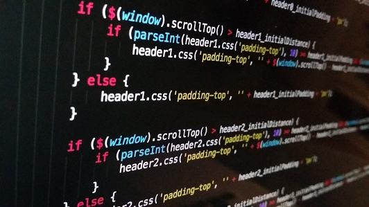

Games e Animações- Nível 1
O curso de Games e Animações- Nivel 1 é a trilha Edutech das séries de sextos e sétimos anos. Nesta trilha você irá desenvolver jogos em 2d, desde concepção, funcionamento, regras, até mesmo a parte visual do jogo com animações, criando personagens. Será visto a questão de efeitos especiais, física do funcionamento dos personagens, sera utilizado para as atividades iniciais, o Scratch, e mais frente você contará com a plataforma AppInventor, para criar seus jogos.
Entre os conteúdos, ensinados neste curso teremos :
- Scratch: Programando seu jogo 2D Parte 1
- Scratch Efeitos Visuais: Programando e mixando efeitos especiais
- Scratch: Física e efeitos especiais
Mas você deve estar se perguntando, que profissões ou áreas este curso vai me proporcionar ?
Bom para essa pergunta, possuo a resposta, entre as áreas são : Game designer, Roterista de Jogos, Programador.

Games e Animações- Nível 2
O curso de Games e Animações - Nível 2 das séries de oitavos e nonos anos , trata os primeiros cursos do nivel 1, com funcionamento, regras, os efeitos especias, a mesma plataforma, porém agora terá um diferencial, você estudante terá alguns cursos a mais para se aprofundar, e será trabalahado e utilizado o Construct e JavaScript para o jogo rodar em ambiente de plataforma.
Entre os conteúdos, ensinados neste curso teremos :
- Construct 1: Criando seu primeiro jogo
- Construct 2: Pontuação, sons e menu
- JavaScript 1: Criando um robô gênio
Profissões relacionadas com esta área
Entre as áreas são : Designer gráfico, Designer de áudio, e Testador de Jogos.

Front-End com HTML5 e CSS3
O curso de Front-End é uma trilha da primeira série do ensino médio, esta trilha irá abranger um pouco sobre como funciona a lógica de programação, e como a usaremos em contrução de sites e páginas com a linguagem de HTML5 e CSS3, após a base, veremos ferramentos para nos ajudar no desenvolvimento como o Boostrap e o Flexbox, estudaremos sobre o layout, e como fazer o site ficar responsivo, ou, seja se adequar em telas de nootebook/computador, até mesmo smartphones.
Entre os conteúdos, ensinados neste curso teremos :
- Lógica de Programação
- HTML5 e CSS3
- Acessibilidade Web
Profissões relacionadas com esta área
Entre as áreas são : Desenvolvedor Front-End, Especialista SE de front-end,Front End Web Designer


Desenvolvimento de MOBILE baseado em JavaScript
O curso de Desenvlvimento de Mobile baseado em JavaScript, é uma das trilhas da segunda série do ensino médio, aprenderemos a lógica de programação e será aplicado na contrução mobile, veremos conceitos de WEB APP´s, rodando ele em diversos tipos de tela, trabalharemos com linguagem de web utilizada por empresas grandes da internet como a Google,Amazon,Facebook, e usaremos a linguagem React Native
Entre os conteúdos, ensinados neste curso teremos :
- Web Design Responsivo: Páginas que se adaptam do mobile ao desk
- React parte 1: Componentes reutilizáveis para sua webapp
- React Native: Trabalhando com Function components
Profissões relacionadas com esta área
Entre a área de atuação é a propriamente dita de desenvolvedor mobile

Data Science( Ciência de Dados)
O curso de Data Science (Ciência de Dados) é uma das trilhas da segunda série do ensino médio, está é uma das áreas da tecnologia que mais cresce, pois as empresas precisam saber o que fazer para processar e extrair as melhores informações da grande massa de dados, para as próximas estratégias em resumo o profissional de Data Science além dos conhecimentos de programação, esse profissional consegue também a ótica do como trabalhar, organizar e otimizar os dados de uma empresa.
Entre os conteúdos, ensinados neste curso teremos :
- Python para Data Science: Primeiros passos
- Data Visualization: Explorando com Seaborn
- Data Science: Primeiros passos
Profissões ou áreas relacionadas com esta área
Entre as áreas de atuação estão a de : Engenheiro de Dados, Arquiteto de Dados e Desenvolvedor de Visualização de dados
Programação em Java
O curso de Programação em Java é uma das trilhas da terceira série do ensino médio, esta é uma das linguagens mais difundida e robusta das décadas no mundo da programação, e para poder citar melhor esta linguagem temos como exemplo o sistema Android desenvolvido nesta linguagem. Nestes cusos será aprendido a linguagem pura para utilizar em interfaces simples, armazenamento de informações, até uma aplicação completa. Nesta trilha você poderá ter uma visão melhor de qual área atuar no mercado amplo, até na área do BACK-END.
Entre os conteúdos, ensinados neste curso teremos :
- Java e JDBC: Trabalhando com um banco de dados
- Eclipse: Produtividade Extrema na IDE com Java
- Java parte 1: Primeiros passos
Profissões ou áreas relacionadas com esta área
Ciência da Computação, Sistemas de Informações, Análise e/ou Desenvolvimento de Sistemas.
Programação em Python
O curso de Programação em Python é uma das trilhas da terceira série do ensino médio, sendo esta uma das linguagens mais querida da atualidade, podemos com ela partir de conceitos básicos até mesmo a desenvolvimento de jogos, trabalharemos com informação simples, com dados de hardware, até ações complexas dentro de games, sendo esta uma linguagem muito ampla e que ainda esta em evolução,adesão para aplicação de pequeno,médio e grande porte.
Entre os conteúdos, ensinados neste curso teremos :
- Python 3 parte 1: Introdução à nova versão da linguagem
- Python Brasil: Validação de dados no padrão nacional
- Pacman com Python e Pygame: Cenário e ator
Profissões ou áreas relacionadas com esta área
Indústria de jogos, Desenvolvimento web e frameworks,Inteligência artificial e machine learning.